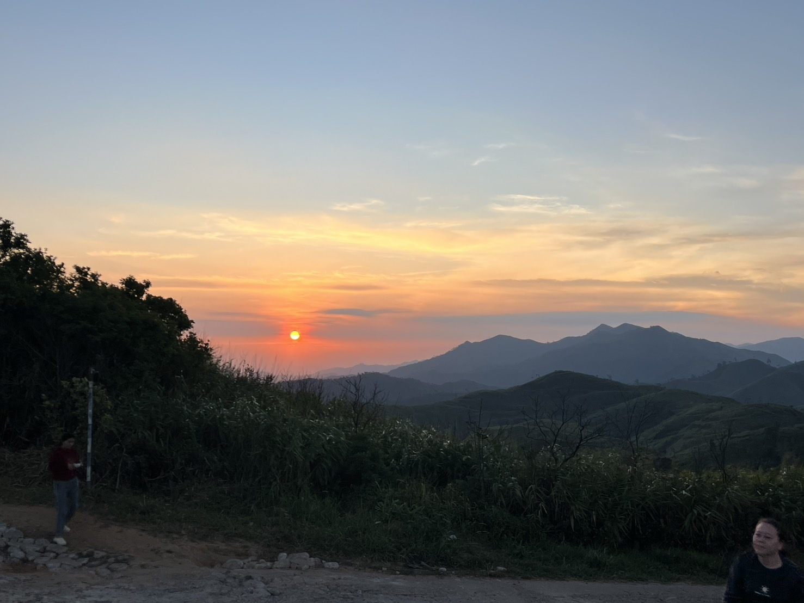

ยินดีต้อนรับสู่เว็บไซต์

ผู้จัดทำโดย
นางสาว อมราพร สาสระคนธ์ 66/96
อาหารที่ชอบ
วิธีการทำ
ตั้งกระทะใบบัวบนไฟแรง ใส่น้ำมันให้เต็มก้นกระทะ พอน้ำมันร้อนลดเป็นไฟกลาง ตอกไข่ลงในกระทะ (ระวังน้ำมันกระเด็น) พอไข่ขาวสุกและขอบเหลืองกรอบ ถ้าชอบแบบไข่แดงเยิ้ม ๆ ก็สามารถตักขึ้นได้เลย หรือถ้าชอบแบบไข่แดงสุก ให้ใช้ตะหลิวกลับไข่ หรือวิดน้ำมันขึ้นมาราดไข่จนไข่แดงสุกก็เป็นอันเรียบร้อย
สถานที่ชอบ

บ้านอีต่อง เป็นที่ตั้งของเหมืองปิล็อก ที่เคยรุ่งเรืองในอดีต เมื่อราวปี พ.ศ. 2483 เหมืองขุดแร่ดีบุกที่มีคนงานร่วม 600 คน จนราคาแร่ทั่วโลกตกต่ำ ผลจากการตัดราคาของแร่จากจีน ประมาณปี พ.ศ. 2527-2528 ความรุ่งโรจน์ของการขุดแร่ได้จบลง ปิล๊อกที่เคยรุ่งเรือง มีตลาดที่เฟื่องฟู เคยมีโรงภาพยนตร์ถึง 2 โรงก็เงียบเหงา เหมืองแร่ต่างๆ ที่นี่ทยอยปิดตัวลง คนงานเริ่มทยอยกลับบ้านแยกย้ายกันไป ปัจจุบันนี้รายได้หลักของหมู่บ้านอีต่องคือ การท่องเที่ยว ที่พักโฮมสเตย์ เหมาะสำหรับผู้ที่ชอบธรรมชาติ อากาศดี อยู่สูงจากระดับน้ำทะเลกว่า 1,000 เมตร เมืองที่ร่ำรวยด้วยหมอก ปัจจุบันเป็นจุดหมายปลายทางที่นักท่องเที่ยวหลายคนต้องการมาสัมผัส ต้องเดินทางผ่าน 399 โค้ง และยังมีแหล่งท่องเที่ยวใกล้ๆ คือ น้ำตกจ๊อกกระดิ่น เนินช้างศึก อุทยานแห่งชาติทองผาภูมิ
บุคคลที่ชอบ
kkk